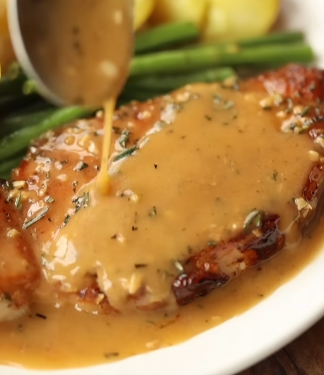

MY
COOKBOOK
Home
Recipes
About
Pork Chop
Back

Ingredients
PREP TIME: 10 minutes
COOK TIME: 20 min
1 Pork Chop
1 tsp salt
1/2 cup Flour
1 tsp pepper
Garlic
minced
Half stick butter
seeded
1 tsp rosemerry
1 cup beef stock or broth
Instructions
Mix Salt, Pepper, & Flour in a bowl
Heat pan over Med-Heat with oil
Coat Pork Chop in flour mixture
Cook pork chop until golden brown on each side, (3 min each side)
For Sauce:
Add minced garlic, rosemerry, butter, stock/broth to a pan
Simmer for 3 min
Add juices from pork chop
Wait until sauce thickens
Serve pork chop with potatoes, green beans.